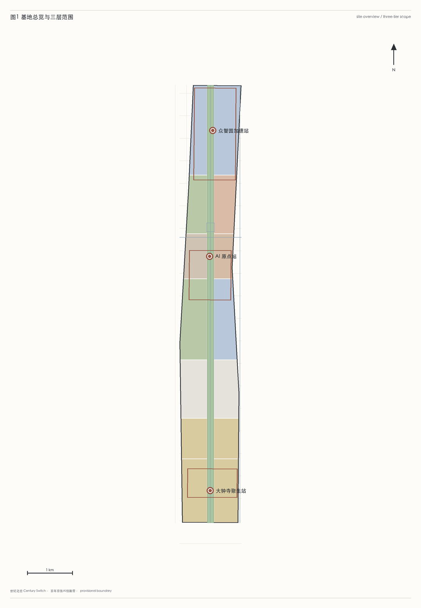
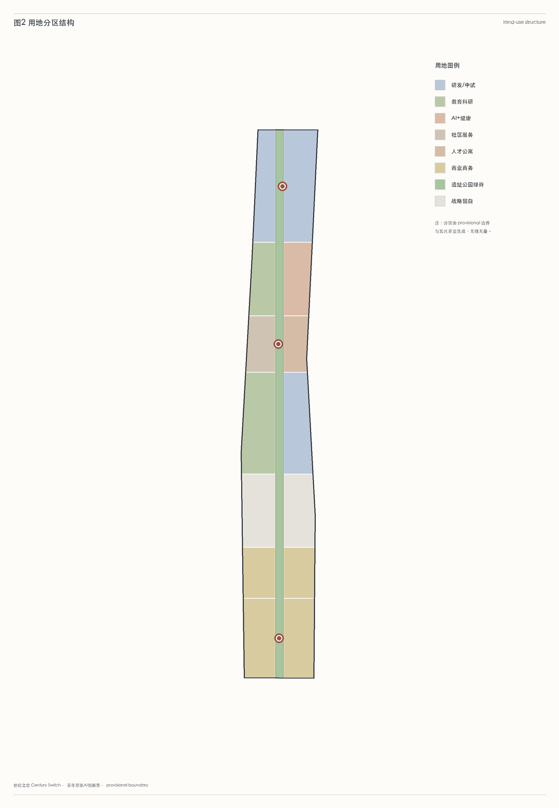
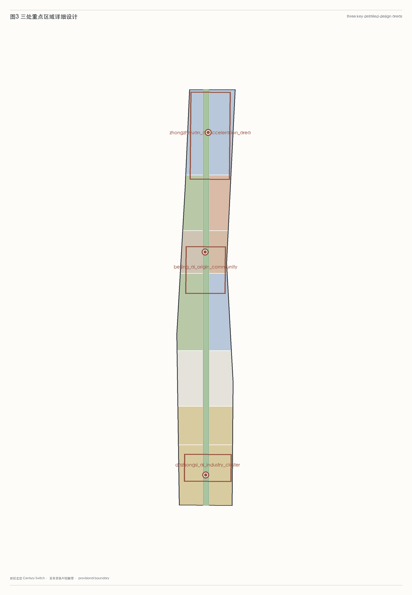
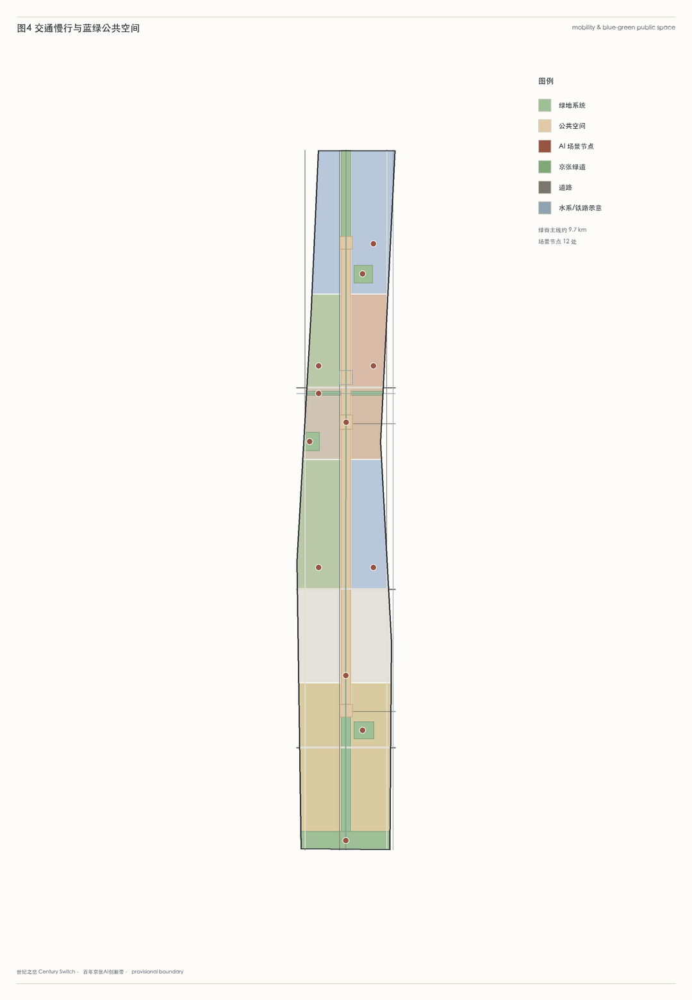
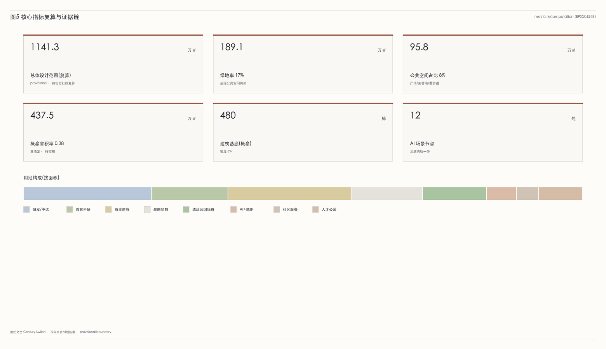
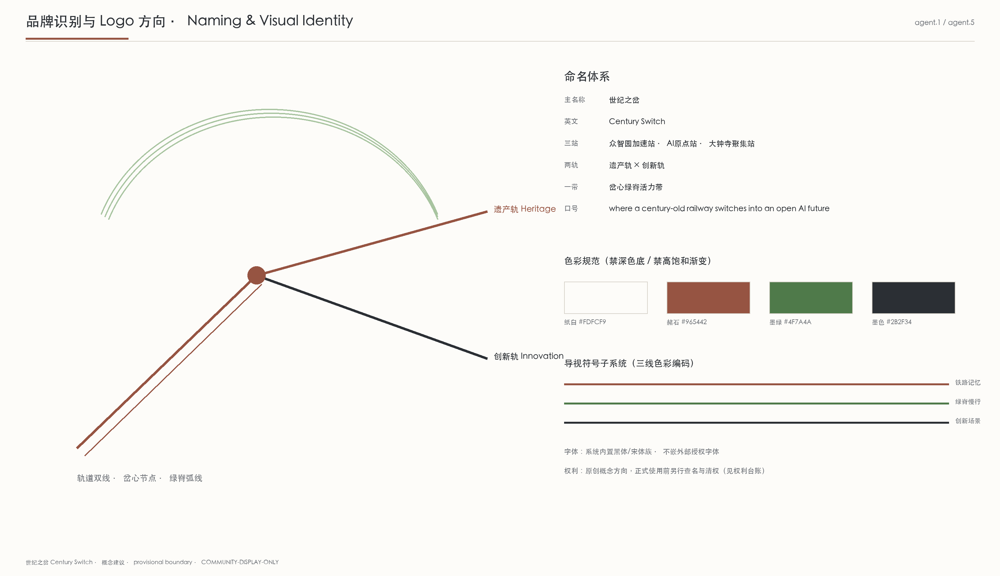
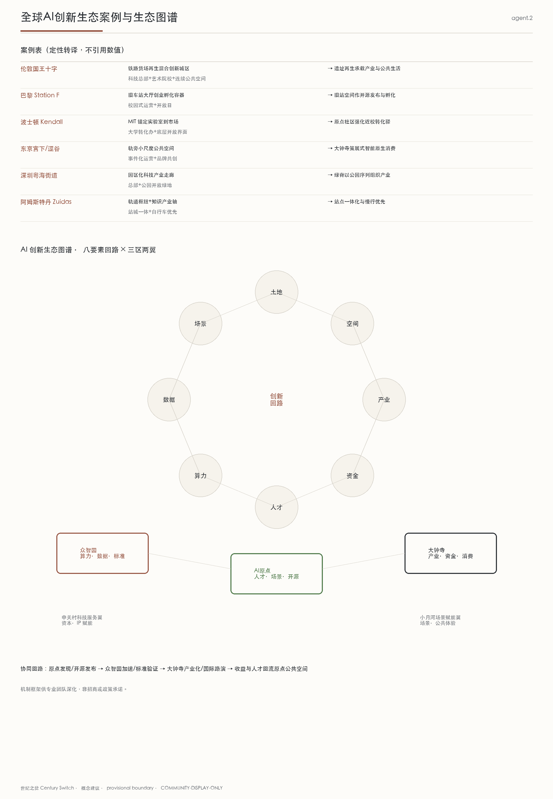
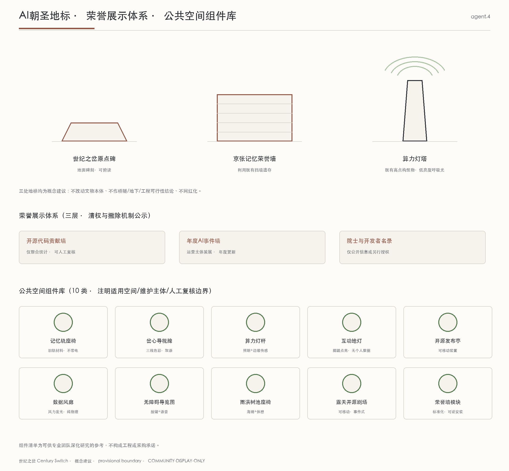
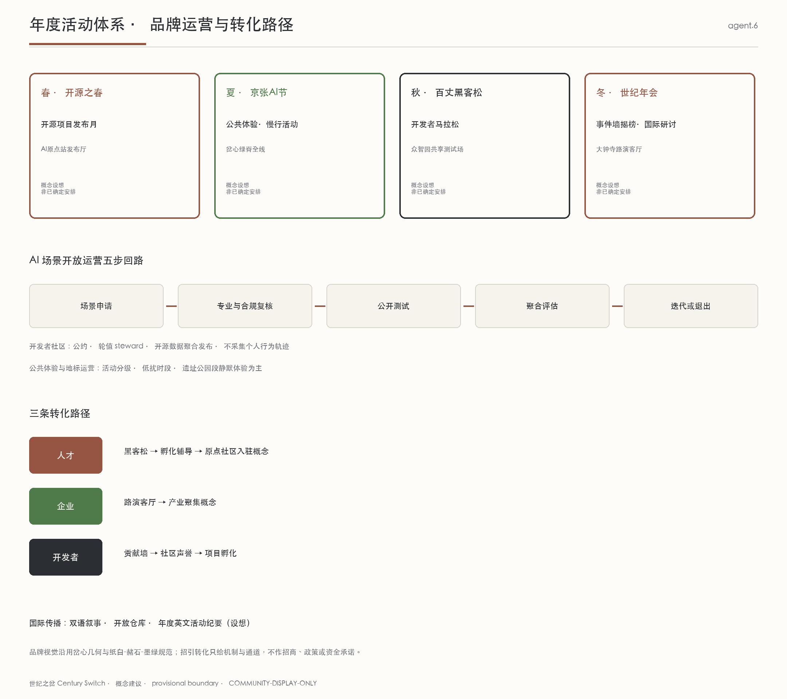

所有空间指标在 EPSG:4548 投影下由提交几何直接复算；官方公告面积以公告值引用。
统筹研究范围（43.6 km²）— 总体设计范围（11.4 km²）— 重点区域范围（368.4 ha）。
示意地图（横向放大以便阅读，非精确比例）。南北向京张廊道上布置「三站两轨一带」：北端众智园加速站、中部 AI 原点站、南端大钟寺聚集站；岔心绿脊贯穿全程。
三层范围在 compliance_matrix.json 中逐条映射公告 1.3 / 1.4 / 1.5 与 agent.1–agent.6 必选任务。
三处详细设计地区，公告面积以官方值引用；provisional 多边形仅作空间组织，不作精确面积依据。
| 编号 | 重点片区 | 公告面积 |
|---|---|---|
| PROV-KEY-001 | 众智园 AI 自主创新加速区 | 192.1 公顷 |
| PROV-KEY-002 | 北京 AI 原点社区 | 104.3 公顷 |
| PROV-KEY-003 | 大钟寺 AI 产业聚集区 | 72.0 公顷 |
用地分区由 provisional 边界与瓦片求交生成，无缝无叠；建筑基底为概念布局，拆改留分类待专业深化。
建筑 480 栋（概念），建筑密度约 6%，概念容积率 0.38（非法定）。更新项目与分期见 proposal.md「更新项目清单、实施政策与分期计划」。
以京张绿脊为慢行主脊，叠加小月河蓝廊、口袋公园与公共空间节点。
绿脊主线约 9.7 km；绿地率 17%，公共空间占比 8%；AI 场景节点 12 处。
场景落到具体图层与节点：朝圣地标、产业验证、社区场景、智能原生商业、AI 健康/教育/交通等。
每个场景标注服务对象、空间位置、数据来源、隐私边界与人工复核机制；治理遵循数据最小化与可解释原则。









23 条公告与 agent 任务逐条映射到章节、图层、指标、图纸与自检。
| 任务 | 要求 | 对应章节 | 状态 |
|---|---|---|---|
| 1.3.1 | 构建世界级AI创新生态体系 | 三层范围工作框架、统筹研究范围产业与未来城市研究 | 已覆盖 |
| 1.3.2 | 建设适配AI新质生产力的新型城市形态 | 三层范围工作框架、统筹研究范围产业与未来城市研究 | 已覆盖 |
| 1.3.3 | 打造全球AI创新人才向往的高品质城区 | 三层范围工作框架、统筹研究范围产业与未来城市研究 | 已覆盖 |
| 1.4.1 | 统筹研究范围 | 三层范围工作框架、统筹研究范围产业与未来城市研究 | 已覆盖 |
| 1.4.2 | 总体设计范围 | 三层范围工作框架、统筹研究范围产业与未来城市研究 | 已覆盖 |
| 1.4.3 | 重点区域范围 | 三层范围工作框架、统筹研究范围产业与未来城市研究 | 已覆盖 |
| 1.5.1.1 | 统筹研究范围：AI创新生态体系 | 三层范围工作框架、统筹研究范围产业与未来城市研究 | 已覆盖 |
| 1.5.1.2 | 统筹研究范围：适配人工智能的未来城市形态 | 三层范围工作框架、统筹研究范围产业与未来城市研究 | 已覆盖 |
| 1.5.2.1 | 总体设计范围：产业目标与功能布局 | 三层范围工作框架、统筹研究范围产业与未来城市研究 | 已覆盖 |
| 1.5.2.2 | 总体设计范围：城市更新总体框架 | 三层范围工作框架、统筹研究范围产业与未来城市研究 | 已覆盖 |
| 1.5.2.3 | 总体设计范围：交通轨道市政配套设施 | 三层范围工作框架、统筹研究范围产业与未来城市研究 | 已覆盖 |
| 1.5.2.4 | 总体设计范围：京张遗址公园活力带 | 三层范围工作框架、统筹研究范围产业与未来城市研究 | 已覆盖 |
| 1.5.2.5 | 总体设计范围：城市风貌 | 三层范围工作框架、统筹研究范围产业与未来城市研究 | 已覆盖 |
| 1.5.3.required | 重点区域范围详细设计必选项 | 三层范围工作框架、统筹研究范围产业与未来城市研究 | 已覆盖 |
| 1.5.3.1 | 众智园AI自主创新加速区 | 三层范围工作框架、统筹研究范围产业与未来城市研究 | 已覆盖 |
| 1.5.3.2 | 北京AI原点社区 | 三层范围工作框架、统筹研究范围产业与未来城市研究 | 已覆盖 |
| 1.5.3.3 | 大钟寺AI产业聚集区 | 三层范围工作框架、统筹研究范围产业与未来城市研究 | 已覆盖 |
| agent.1 | 一带总体概念与功能统筹方案设计 | 三层范围工作框架、统筹研究范围产业与未来城市研究 | 已覆盖 |
| agent.2 | AI全栈自主创新体系与世界级AI创新生态设计 | 三层范围工作框架、统筹研究范围产业与未来城市研究 | 已覆盖 |
| agent.3 | AI+场景赋能新范式与智能化AI活力城市设计 | 三层范围工作框架、统筹研究范围产业与未来城市研究 | 已覆盖 |
| agent.4 | AI公共空间、智能原生新业态与朝圣地标设计 | 三层范围工作框架、统筹研究范围产业与未来城市研究 | 已覆盖 |
| agent.5 | 百年京张文化、中关村文化与AI新文化融合叙事设计 | 三层范围工作框架、统筹研究范围产业与未来城市研究 | 已覆盖 |
| agent.6 | 一带全球AI创新活动体系与长期运营设计 | 三层范围工作框架、统筹研究范围产业与未来城市研究 | 已覆盖 |
本地结构化自检结果；最终以后续 self_check_submission.py 输出为准。
| 检查项 | 结果 | 说明 |
|---|---|---|
| BOUNDARY_TRUST | 通过 | Provisional boundary is present; replace with official redline before professional scoring. |
| KEY_AREAS_TRUST | 通过 | Three required key areas are provisional; replace with official polygons before professional scoring. |
| LAND_USE_TOPOLOGY | 通过 | Initial land-use polygons are derived from site boundary partitioning. |
| VISUAL_STATIC | 通过 | Static HTML visualization is generated without external dependencies. |
| PROFESSIONAL_EVIDENCE | 通过 | Proposal includes references to standards, design depth items, geometry, metrics, sources, and assumptions. |
资料来源登记，区分官方公开、清权、provisional 与推断。
设计假设与待确认事项，明确 provisional 边界与官方控制条件的边界。
任务书要求成果逐项齐备：Logo 方向、全球案例与生态图谱、朝圣地标与组件库、年度运营与转化路径。
按「版权可追溯」原则逐项登记成果权利状态，正式传播前由人类团队复核清权。